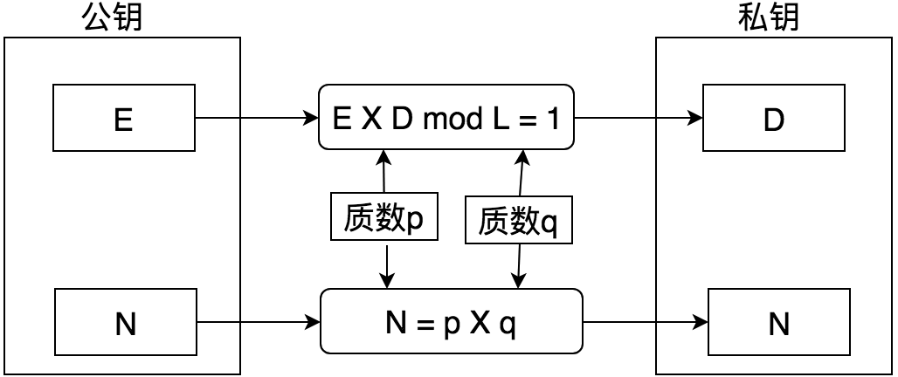
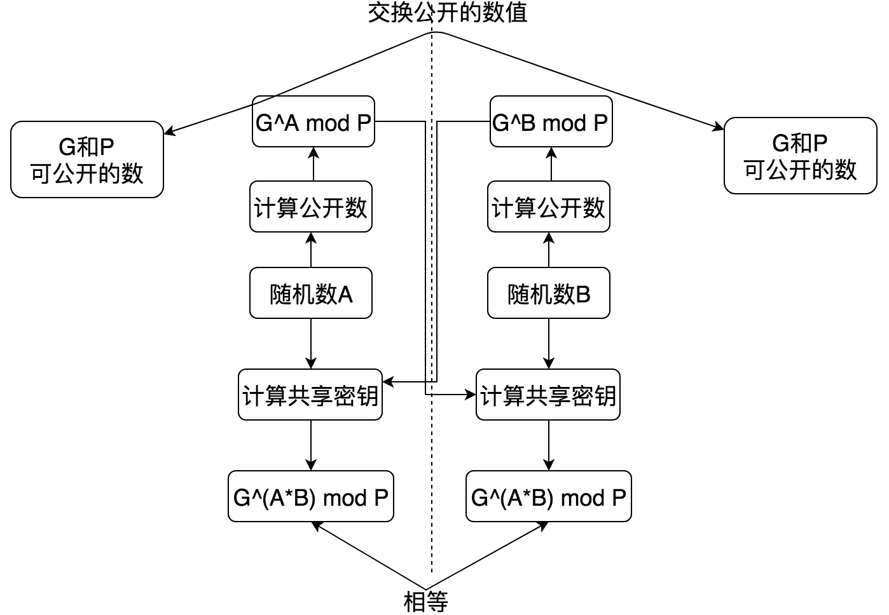
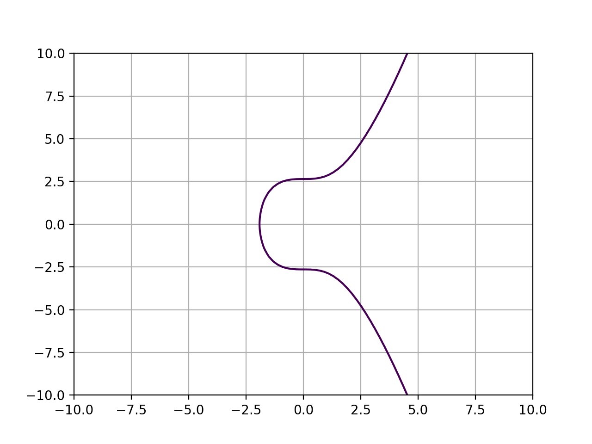
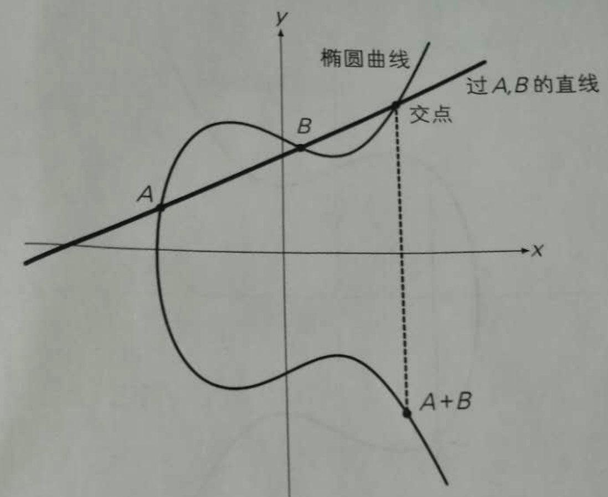
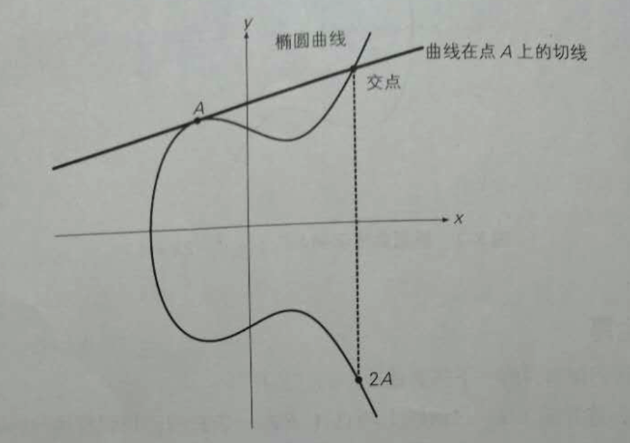
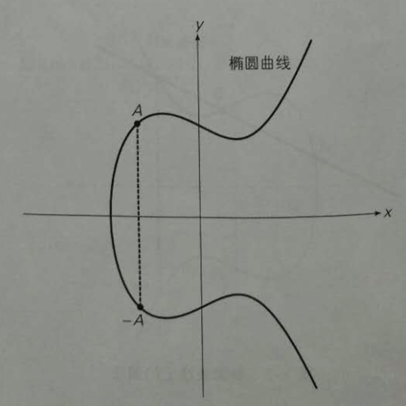

理解椭圆曲线密码学
Jul 25, 2017 14:59 · 149 words · 1 minute read
密码学技术是区块链技术的基石，不管是比特币还是以太坊，交易的完成离不开密码学技术的应用。例如用户签名，P2P网络数据的传输等，整个系统的运转其实是个混合密码系统。 在理解区块链技术的过程中，避免不了密码学的认识，其中椭圆曲线密码使用的更为广泛，由于其效率高、强度大被比特币和以太坊大量使用。如果之前没有做过密码学相关的工作， 想做好区块链技术的话，还是要好好研究下密码学的。所以在理解认识椭圆曲线密码之前，先认识下RSA和DH密码交换。
RSA
RSA也称为非对称密码，椭圆曲线只不过是非对称密码的另一种实现和应用。 RSA计算过程： 
从图中可以看出，一切从p和q出发，两个比较大的质数，求出E，D，N的过程。其中（E，N）组合成公钥，（D，N）组合成私钥。其中：
L = lcm(p-1, q-1) 最小公倍数
gcd(E, L) = 1 最大公约数为1
1<E<L
1<D<L
加密过程：密文 = 明文^E mod N
解密过程：明文 = 密文^D mod N
算法看起来非常大简洁和清晰，但是背后的原理就复杂的多了，需要用到很多数论、代数的知识。 RSA在使用过程中大多数的场景都是用来进行密钥交换，因为安全性好，不存在共享密钥问题，但是效率上不如对称密钥，所以很多情况下都是混合使用对称和非对称加密。 同样的使用RSA也可以进行数字签名：
签名 = 消息^D mod N
签名消息 = 签名^E mod N
可以看出数字签名和加密解密过程正好相反。 综上，RSA是利用了大数质数分解难题。
密钥交换/协商
共享密钥就会有密钥配送问题，Diffie-Hellman是解决这一问题的重要算法。 其计算流程：
 对于可公开的数，G和P，P是一个非常大的质数，而G则是P的一个生成元。DH跟椭圆曲线加密算法一样，都是建立在离散对数问题上。 根据G^A mod P计算出A，就是所谓的有限域上的离散对数问题。目前还没有有效的算法来解决这个问题。 生成元的概念在近世代数中可以找到，是群论中的基础。G是P的生成元满足，G的乘方结果与1到p-1的数字一一对应。例如2是13的生成元，满足2的一次方到2的十二次方的结果 跟13取余，正好在1到12相对应。 与RSA不同，Diffie-Hellman是利用了离散对数问题，即以一个大质数P为模，已知G和G^x mod P，求x，同样的没有有效算法。
椭圆曲线密码学
椭圆曲线密码学:Elliptic Curve Cryptography，是利用椭圆曲线来实现的密码技术，与RSA相比，密钥可以更短，但强度更高。现在已广泛使用。 特别blockchain技术中，加密是重要的一环，比特币中便是使用了椭圆曲线密码技术，以太坊中也是使用的椭圆曲线DSA， 更为一般的HTTPS中使用的TLS也是基于椭圆曲线实现的密码交换。
椭圆曲线密码技术包含三个方面：
- 基于椭圆曲线的公钥密码
- 基于椭圆曲线的数字签名
- 基于椭圆曲线的密钥交换
下面会对这些技术进行一一梳理，现在先看下椭圆曲线的定义：
E:y^2 = ax^3 + bx^2 + cx + d。
Secp256k1这个曲线在椭圆曲线密码中使用较多，其定义是a=1, b=0, c=0, d=7时，看看这个曲线长成什么样： 
这样的图线是不是感觉不是很陌生呢，必然有些性质才能让他更加特殊以至于在密码学上大放异彩。 首先有些运算法则是建立在椭圆曲线上的。 加法运算的定义：

二倍运算： 
取反运算： 
可以看出这些运算建立在直线的交点上。那么已知G点，可以求出2G，3G等点，并不困难，但是困难在于，已知点xG，求x则非常困难。由此可见椭圆曲线已经具备了密码学的难题基础。 但是上面的图线都是在实数域上，都是连续的函数，但密码学中是不会用实数的，想象一下如何使用一个小数对信息加密会是什么情景，当然会使得效率降低，同时由于精度损失问题使加密消息变得不准确。 椭圆曲线密码是在有限域上的，所谓有限域是指给定质数P，由0，1，…，P-1共P个元素整数集合中定义的加减乘除运算。 这样的曲线定义为：
E:y^2 = ax^3 + bx^2 + cx + d (mod P)
椭圆曲线密码利用的就是椭圆曲线上的离散对数问题：已知椭圆曲线E，E上的一点G，以及G的x倍点xG，求x。 当P非常大的时候，这个问题的求解是非常困难的，要不然就不是椭圆曲线密码了。
例如Secp256k1的P= 2^256 - 2^32 - 2^9 - 2^8 - 2^7 - 2^6 - 2^4 - 1。
分别看下椭圆曲线密码的三个应用场景：
公钥密码：椭圆曲线EIGamal密码：
- A用自己的私钥a以及B的的公钥bG，对消息M加密，计算 M + abG
- B收到密文M + abG, 用A的公钥aG以及自己的私钥b计算得出共享密钥abG
- B使用将密文减去共享密钥abG，即可得到明文
椭圆曲线Diffie-Hellman密钥交换： 基于椭圆曲线的DH交换，和上述对DH的计算步骤描述基本一致。使用各自的公钥和G点，通过各自生产的随机数，很容易就能生成共享密钥了。
椭圆曲线DSA/ECDSA：
ECDSA是使用最为广泛的了，数字签名是交易执行的关键组成部分，并以此来保证交易的合法和所有权。 对消息m生成签名：
- A根据随机数r和G点，求出rG=(x,y)
- 然后根据r、消息m的散列值h、私钥a计算s=(h+ax)/r
- A将消息发给接收方，包括m、点rG=（x,y）、s，rG和s就是数字签名
签名验证：
- B接收到m、点rG=（x,y）、s，并计算得到散列值h
- B使用A的公钥进行计算：(h/s)G + (x/s)aG = ((h+ax)/s)G, 因为s= (h+ax)/r，最终结果就是rG
由于私钥的原因，攻击者是很难计算出合法的s。并且随机数可以随时更换，让攻击更加困难。
ECC在https中也大量使用，例如通过抓包可以看到ECDHE_ECDSA、ECDHE_RSA的密码套件，其中的E就是Ephemeral，意味短暂的，让攻击更加困难。
本文算是个入门，后面有时间具体分享下网络中的使用情况，例如HTTPS、MAC密码算法等等。